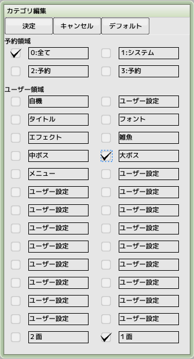

各種パーツにカテゴリを設定しておくとパーツ数が増えてきたときに目的パーツが探しやすくなります
カテゴリの絞り込みによるパーツの検索方法はプロジェクトウインドウを参照してください
カテゴリは全部で32種類（そのうち4種類はシステムで予約されています）あり、名称を自由に設定することができます
- 予約領域
システムで予約されています
- ユーザー領域
カテゴリ名を自由に設定できます
チェックボックスをONにするとそのカテゴリに属することを示します
- デフォルト
画面上部にあるデフォルトボタンを押すと「全て」のみチェックが入った状態になります
新規パーツ作成時に初期値として設定されるカテゴリは、プロジェクトウインドウのカテゴリ欄のチェックボックスと同じものになります
 ■元のページへ戻る
■元のページへ戻る